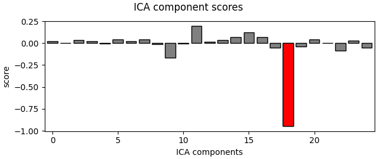
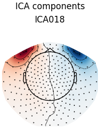
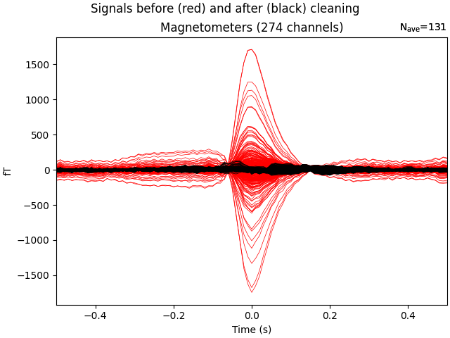
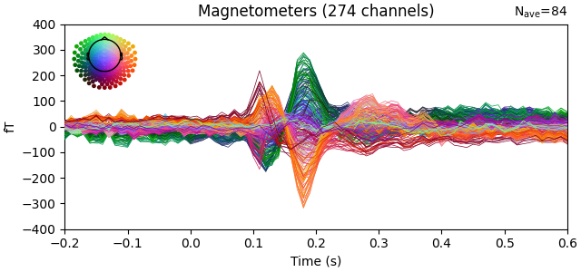
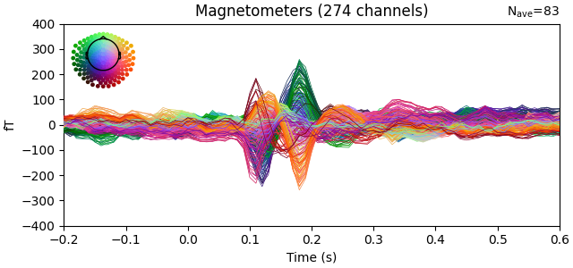
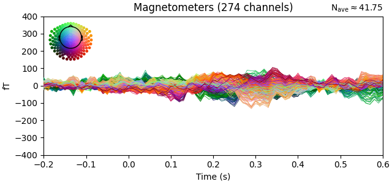

Note
Go to the end to download the full example code.
From raw data to dSPM on SPM Faces dataset#
Runs a full pipeline using MNE-Python. This example does quite a bit of processing, so even on a fast machine it can take several minutes to complete.
# Authors: Alexandre Gramfort <alexandre.gramfort@inria.fr>
# Denis Engemann <denis.engemann@gmail.com>
#
# License: BSD-3-Clause
# Copyright the MNE-Python contributors.
import mne
from mne import combine_evoked, io
from mne.datasets import spm_face
from mne.minimum_norm import apply_inverse, make_inverse_operator
from mne.preprocessing import ICA, create_eog_epochs
print(__doc__)
data_path = spm_face.data_path()
subjects_dir = data_path / "subjects"
spm_path = data_path / "MEG" / "spm"
Load data, filter it, and fit ICA.
raw_fname = spm_path / "SPM_CTF_MEG_example_faces1_3D.ds"
raw = io.read_raw_ctf(raw_fname, preload=True) # Take first run
# Here to save memory and time we'll downsample heavily -- this is not
# advised for real data as it can effectively jitter events!
raw.resample(100)
raw.filter(1.0, None) # high-pass
reject = dict(mag=5e-12)
ica = ICA(n_components=0.95, max_iter="auto", random_state=0)
ica.fit(raw, reject=reject)
# compute correlation scores, get bad indices sorted by score
eog_epochs = create_eog_epochs(raw, ch_name="MRT31-2908", reject=reject)
eog_inds, eog_scores = ica.find_bads_eog(eog_epochs, ch_name="MRT31-2908")
ica.plot_scores(eog_scores, eog_inds) # see scores the selection is based on
ica.plot_components(eog_inds) # view topographic sensitivity of components
ica.exclude += eog_inds[:1] # we saw the 2nd ECG component looked too dipolar
ica.plot_overlay(eog_epochs.average()) # inspect artifact removal
- 
- 
- 
ds directory : /home/circleci/mne_data/MNE-spm-face/MEG/spm/SPM_CTF_MEG_example_faces1_3D.ds
res4 data read.
hc data read.
Separate EEG position data file not present.
Quaternion matching (desired vs. transformed):
-0.90 72.01 0.00 mm <-> -0.90 72.01 0.00 mm (orig : -43.09 61.46 -252.17 mm) diff = 0.000 mm
0.90 -72.01 0.00 mm <-> 0.90 -72.01 0.00 mm (orig : 53.49 -45.24 -258.02 mm) diff = 0.000 mm
98.30 0.00 0.00 mm <-> 98.30 -0.00 0.00 mm (orig : 78.60 72.16 -241.87 mm) diff = 0.000 mm
Coordinate transformations established.
Polhemus data for 3 HPI coils added
Device coordinate locations for 3 HPI coils added
Measurement info composed.
Finding samples for /home/circleci/mne_data/MNE-spm-face/MEG/spm/SPM_CTF_MEG_example_faces1_3D.ds/SPM_CTF_MEG_example_faces1_3D.meg4:
System clock channel is available, checking which samples are valid.
1 x 324474 = 324474 samples from 340 chs
Current compensation grade : 3
Reading 0 ... 324473 = 0.000 ... 675.985 secs...
Finding events on: UPPT002, UPPT001
Trigger channel UPPT002 has a non-zero initial value of 255 (consider using initial_event=True to detect this event)
172 events found on stim channel UPPT002
Event IDs: [255]
172 events found on stim channel UPPT001
Event IDs: [1 2 3]
Finding events on: UPPT002, UPPT001
Trigger channel UPPT002 has a non-zero initial value of 255 (consider using initial_event=True to detect this event)
172 events found on stim channel UPPT002
Event IDs: [255]
172 events found on stim channel UPPT001
Event IDs: [1 2 3]
Filtering raw data in 1 contiguous segment
Setting up high-pass filter at 1 Hz
FIR filter parameters
---------------------
Designing a one-pass, zero-phase, non-causal highpass filter:
- Windowed time-domain design (firwin) method
- Hamming window with 0.0194 passband ripple and 53 dB stopband attenuation
- Lower passband edge: 1.00
- Lower transition bandwidth: 1.00 Hz (-6 dB cutoff frequency: 0.50 Hz)
- Filter length: 331 samples (3.310 s)
Fitting ICA to data using 274 channels (please be patient, this may take a while)
Removing 5 compensators from info because not all compensation channels were picked.
Rejecting epoch based on MAG : ['MLT35-2908', 'MLT42-2908', 'MLT45-2908', 'MLT52-2908', 'MRT14-2908', 'MRT43-2908', 'MRT44-2908', 'MRT45-2908', 'MRT53-2908', 'MRT54-2908']
Artifact detected in [19200, 19400]
Rejecting epoch based on MAG : ['MLT35-2908', 'MLT42-2908', 'MLT45-2908', 'MLT52-2908', 'MRT14-2908', 'MRT43-2908', 'MRT44-2908', 'MRT45-2908', 'MRT53-2908', 'MRT54-2908']
Artifact detected in [19400, 19600]
Rejecting epoch based on MAG : ['MRT43-2908']
Artifact detected in [19600, 19800]
Rejecting epoch based on MAG : ['MLT24-2908', 'MLT25-2908', 'MLT34-2908', 'MLT35-2908']
Artifact detected in [67000, 67200]
Rejecting epoch based on MAG : ['MLF54-2908', 'MLO11-2908', 'MLO14-2908', 'MLP51-2908', 'MLP54-2908', 'MLT14-2908', 'MLT23-2908', 'MLT24-2908', 'MLT25-2908', 'MLT34-2908', 'MLT35-2908', 'MLT36-2908', 'MLT44-2908', 'MLT45-2908', 'MRO12-2908', 'MRO21-2908', 'MRO31-2908', 'MRO32-2908', 'MRO42-2908', 'MRO43-2908', 'MRP41-2908', 'MRP52-2908', 'MRP53-2908', 'MRT31-2908']
Artifact detected in [67200, 67400]
Selecting by explained variance: 25 components
Fitting ICA took 3.0s.
Using EOG channel: MRT31-2908
EOG channel index for this subject is: [274]
Filtering the data to remove DC offset to help distinguish blinks from saccades
Selecting channel MRT31-2908 for blink detection
Setting up band-pass filter from 1 - 10 Hz
FIR filter parameters
---------------------
Designing a two-pass forward and reverse, zero-phase, non-causal bandpass filter:
- Windowed frequency-domain design (firwin2) method
- Hann window
- Lower passband edge: 1.00
- Lower transition bandwidth: 0.50 Hz (-12 dB cutoff frequency: 0.75 Hz)
- Upper passband edge: 10.00 Hz
- Upper transition bandwidth: 0.50 Hz (-12 dB cutoff frequency: 10.25 Hz)
- Filter length: 1000 samples (10.000 s)
Now detecting blinks and generating corresponding events
Found 144 significant peaks
Number of EOG events detected: 144
Not setting metadata
144 matching events found
No baseline correction applied
Using data from preloaded Raw for 144 events and 101 original time points ...
Rejecting epoch based on MAG : ['MLT35-2908', 'MLT42-2908', 'MLT45-2908', 'MLT52-2908', 'MRT14-2908', 'MRT43-2908', 'MRT44-2908', 'MRT45-2908', 'MRT53-2908', 'MRT54-2908']
Rejecting epoch based on MAG : ['MLT35-2908', 'MLT42-2908', 'MLT45-2908', 'MLT52-2908', 'MRT14-2908', 'MRT43-2908', 'MRT44-2908', 'MRT45-2908', 'MRT53-2908', 'MRT54-2908']
Rejecting epoch based on MAG : ['MLT24-2908', 'MLT35-2908']
Rejecting epoch based on MAG : ['MLT24-2908', 'MLT34-2908', 'MLT35-2908']
Rejecting epoch based on MAG : ['MLT14-2908', 'MLT24-2908', 'MLT25-2908', 'MLT34-2908', 'MLT35-2908', 'MLT44-2908']
Rejecting epoch based on MAG : ['MLT14-2908', 'MLT23-2908', 'MLT24-2908', 'MLT25-2908', 'MLT34-2908', 'MLT35-2908', 'MLT44-2908']
Rejecting epoch based on MAG : ['MLT14-2908', 'MLT23-2908', 'MLT24-2908', 'MLT25-2908', 'MLT34-2908', 'MLT35-2908', 'MLT44-2908', 'MLT45-2908', 'MRO42-2908', 'MRP52-2908']
Rejecting epoch based on MAG : ['MLT14-2908', 'MLT23-2908', 'MLT24-2908', 'MLT25-2908', 'MLT34-2908', 'MLT35-2908', 'MLT36-2908', 'MLT44-2908', 'MLT45-2908', 'MRO12-2908', 'MRO32-2908', 'MRO42-2908', 'MRO43-2908', 'MRP41-2908', 'MRP52-2908', 'MRP53-2908']
Rejecting epoch based on MAG : ['MLF54-2908', 'MLO11-2908', 'MLO14-2908', 'MLP51-2908', 'MLP54-2908', 'MLT14-2908', 'MLT23-2908', 'MLT24-2908', 'MLT25-2908', 'MLT34-2908', 'MLT35-2908', 'MLT36-2908', 'MLT44-2908', 'MLT45-2908', 'MRO12-2908', 'MRO21-2908', 'MRO32-2908', 'MRO43-2908', 'MRP41-2908', 'MRP52-2908', 'MRP53-2908', 'MRT31-2908']
Rejecting epoch based on MAG : ['MLF54-2908', 'MLO11-2908', 'MLO14-2908', 'MLP51-2908', 'MLP54-2908', 'MLT14-2908', 'MLT23-2908', 'MLT24-2908', 'MLT25-2908', 'MLT34-2908', 'MLT35-2908', 'MLT36-2908', 'MLT44-2908', 'MLT45-2908', 'MRO12-2908', 'MRO21-2908', 'MRO32-2908', 'MRO43-2908', 'MRP41-2908', 'MRP52-2908']
Rejecting epoch based on MAG : ['MLT14-2908', 'MLT24-2908', 'MLT25-2908', 'MRP41-2908']
Rejecting epoch based on MAG : ['MLT14-2908']
13 bad epochs dropped
Using EOG channel: MRT31-2908
Applying ICA to Evoked instance
Transforming to ICA space (25 components)
Zeroing out 1 ICA component
Projecting back using 274 PCA components
Epoch data and apply ICA.
events = mne.find_events(raw, stim_channel="UPPT001")
event_ids = {"faces": 1, "scrambled": 2}
tmin, tmax = -0.2, 0.6
epochs = mne.Epochs(
raw,
events,
event_ids,
tmin,
tmax,
picks="meg",
baseline=None,
preload=True,
reject=reject,
)
del raw
ica.apply(epochs) # clean data, default in place
evoked = [epochs[k].average() for k in event_ids]
contrast = combine_evoked(evoked, weights=[-1, 1]) # Faces - scrambled
evoked.append(contrast)
for e in evoked:
e.plot(ylim=dict(mag=[-400, 400]))
- 
- 
- 
Finding events on: UPPT001
172 events found on stim channel UPPT001
Event IDs: [1 2 3]
Not setting metadata
168 matching events found
No baseline correction applied
0 projection items activated
Using data from preloaded Raw for 168 events and 81 original time points ...
Rejecting epoch based on MAG : ['MLT35-2908', 'MLT42-2908', 'MLT45-2908', 'MLT52-2908', 'MRT14-2908', 'MRT43-2908', 'MRT44-2908', 'MRT45-2908', 'MRT53-2908', 'MRT54-2908']
1 bad epochs dropped
Applying ICA to Epochs instance
Transforming to ICA space (25 components)
Zeroing out 1 ICA component
Projecting back using 274 PCA components
Removing 5 compensators from info because not all compensation channels were picked.
Removing 5 compensators from info because not all compensation channels were picked.
Removing 5 compensators from info because not all compensation channels were picked.
Removing 5 compensators from info because not all compensation channels were picked.
Removing 5 compensators from info because not all compensation channels were picked.
Removing 5 compensators from info because not all compensation channels were picked.
Removing 5 compensators from info because not all compensation channels were picked.
Removing 5 compensators from info because not all compensation channels were picked.
Removing 5 compensators from info because not all compensation channels were picked.
Estimate noise covariance and look at the whitened evoked data
Removing 5 compensators from info because not all compensation channels were picked.
Reducing data rank from 274 -> 274
Estimating covariance using SHRUNK
Done.
Number of samples used : 3507
[done]
NOTE: pick_types() is a legacy function. New code should use inst.pick(...).
Removing 5 compensators from info because not all compensation channels were picked.
Computing rank from covariance with rank=None
Using tolerance 6.2e-14 (2.2e-16 eps * 274 dim * 1 max singular value)
Estimated rank (mag): 274
MAG: rank 274 computed from 274 data channels with 0 projectors
Computing rank from covariance with rank={'mag': 274}
Setting small MAG eigenvalues to zero (without PCA)
Created the whitener using a noise covariance matrix with rank 274 (0 small eigenvalues omitted)
Compute forward model
trans_fname = spm_path / "SPM_CTF_MEG_example_faces1_3D_raw-trans.fif"
src = subjects_dir / "spm" / "bem" / "spm-oct-6-src.fif"
bem = subjects_dir / "spm" / "bem" / "spm-5120-5120-5120-bem-sol.fif"
forward = mne.make_forward_solution(contrast.info, trans_fname, src, bem)
Source space : /home/circleci/mne_data/MNE-spm-face/subjects/spm/bem/spm-oct-6-src.fif
MRI -> head transform : /home/circleci/mne_data/MNE-spm-face/MEG/spm/SPM_CTF_MEG_example_faces1_3D_raw-trans.fif
Measurement data : instance of Info
Conductor model : /home/circleci/mne_data/MNE-spm-face/subjects/spm/bem/spm-5120-5120-5120-bem-sol.fif
Accurate field computations
Do computations in head coordinates
Free source orientations
Reading /home/circleci/mne_data/MNE-spm-face/subjects/spm/bem/spm-oct-6-src.fif...
Read 2 source spaces a total of 8196 active source locations
Coordinate transformation: MRI (surface RAS) -> head
0.999622 0.006802 0.026647 -2.80 mm
-0.014131 0.958276 0.285497 6.72 mm
-0.023593 -0.285765 0.958009 9.43 mm
0.000000 0.000000 0.000000 1.00
Read 303 MEG channels from info
Read 29 MEG compensation channels from info
5 compensation data sets in info
Setting up compensation data...
Desired compensation data (3) found.
All compensation channels found.
Preselector created.
Compensation data matrix created.
Postselector created.
105 coil definitions read
Coordinate transformation: MEG device -> head
0.997940 -0.049681 -0.040594 -1.35 mm
0.054745 0.989330 0.135013 -0.41 mm
0.033453 -0.136957 0.990012 65.80 mm
0.000000 0.000000 0.000000 1.00
MEG coil definitions created in head coordinates.
Removing 5 compensators from info because not all compensation channels were picked.
Source spaces are now in head coordinates.
Setting up the BEM model using /home/circleci/mne_data/MNE-spm-face/subjects/spm/bem/spm-5120-5120-5120-bem-sol.fif...
Loading surfaces...
Loading the solution matrix...
Three-layer model surfaces loaded.
Loaded linear collocation BEM solution from /home/circleci/mne_data/MNE-spm-face/subjects/spm/bem/spm-5120-5120-5120-bem-sol.fif
Employing the head->MRI coordinate transform with the BEM model.
BEM model spm-5120-5120-5120-bem-sol.fif is now set up
Source spaces are in head coordinates.
Checking that the sources are inside the surface (will take a few...)
Checking surface interior status for 4098 points...
Found 1659/4098 points inside an interior sphere of radius 52.6 mm
Found 0/4098 points outside an exterior sphere of radius 100.0 mm
Found 0/2439 points outside using surface Qhull
Found 0/2439 points outside using solid angles
Total 4098/4098 points inside the surface
Interior check completed in 1090.7 ms
Checking surface interior status for 4098 points...
Found 1713/4098 points inside an interior sphere of radius 52.6 mm
Found 0/4098 points outside an exterior sphere of radius 100.0 mm
Found 0/2385 points outside using surface Qhull
Found 0/2385 points outside using solid angles
Total 4098/4098 points inside the surface
Interior check completed in 1083.1 ms
Checking surface interior status for 303 points...
Found 0/303 points inside an interior sphere of radius 74.7 mm
Found 29/303 points outside an exterior sphere of radius 158.6 mm
Found 274/274 points outside using surface Qhull
Found 0/ 0 points outside using solid angles
Total 0/303 points inside the surface
Interior check completed in 16.1 ms
Composing the field computation matrix...
Computing MEG at 8196 source locations (free orientations)...
Finished.
Compute inverse solution and plot
snr = 3.0
lambda2 = 1.0 / snr**2
inverse_operator = make_inverse_operator(contrast.info, forward, noise_cov)
stc = apply_inverse(contrast, inverse_operator, lambda2, method="dSPM", pick_ori=None)
brain = stc.plot(
hemi="both",
subjects_dir=subjects_dir,
initial_time=0.170,
views=["ven"],
clim={"kind": "value", "lims": [3.0, 6.0, 9.0]},
)
Converting forward solution to surface orientation
Average patch normals will be employed in the rotation to the local surface coordinates....
Converting to surface-based source orientations...
[done]
Computing inverse operator with 274 channels.
274 out of 274 channels remain after picking
Removing 5 compensators from info because not all compensation channels were picked.
Selected 274 channels
Creating the depth weighting matrix...
274 magnetometer or axial gradiometer channels
limit = 8109/8196 = 10.042069
scale = 4.04483e-11 exp = 0.8
Applying loose dipole orientations to surface source spaces: 0.2
Whitening the forward solution.
Removing 5 compensators from info because not all compensation channels were picked.
Computing rank from covariance with rank=None
Using tolerance 6.2e-14 (2.2e-16 eps * 274 dim * 1 max singular value)
Estimated rank (mag): 274
MAG: rank 274 computed from 274 data channels with 0 projectors
Setting small MAG eigenvalues to zero (without PCA)
Creating the source covariance matrix
Adjusting source covariance matrix.
Computing SVD of whitened and weighted lead field matrix.
largest singular value = 12.9662
scaling factor to adjust the trace = 2.48756e+19 (nchan = 274 nzero = 0)
Removing 5 compensators from info because not all compensation channels were picked.
Preparing the inverse operator for use...
Scaled noise and source covariance from nave = 1 to nave = 41
Created the regularized inverter
The projection vectors do not apply to these channels.
Created the whitener using a noise covariance matrix with rank 274 (0 small eigenvalues omitted)
Computing noise-normalization factors (dSPM)...
[done]
Applying inverse operator to "-faces + scrambled"...
Picked 274 channels from the data
Computing inverse...
Eigenleads need to be weighted ...
Computing residual...
Explained 48.3% variance
Combining the current components...
dSPM...
[done]
Total running time of the script: (0 minutes 46.561 seconds)